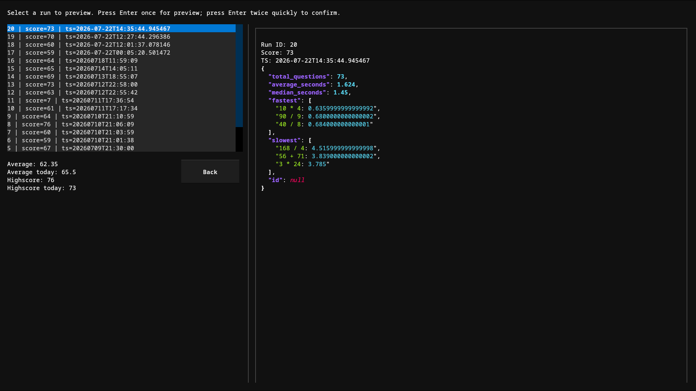

A terminal clone of Zetamac, the timed mental-math arithmetic trainer, built with Textual.



All features from arithmetic.zetamac.com with an identical interface and functionality (as shown above), like addition, subtraction, division.
Local SQLite run history with per-problem timings (only runs with default setting though, otherwise everything gets jumbled and you can't track data effectively)
A pretty interface for selecting runs with summaries for each
Able to replay any run, or replay all the hardest questions (questions which took the longest time)
Per-run analytics to identify weak spots
Fully keyboard-driven terminal UI (what Textual does).
An additional flash anzan gamemode, although that doesn't have the logging the core does
Written in python, so can descend into a python or sqlite shell for directly interacting with the state. For dev, and can be normally used with helper functions defined.
Requires Python 3.10+.
git clone https://github.com/yaofanfish/zetamac-py.git
cd zetamac-py
pip install -e .[opt]
zetamac-py
The interface is generally straightforward, and as mentioned before, the core is identical to the web zetamac. Configure settings, start a round, review past runs, or replay difficult questions directly from the menu.
( On windows, replace ~ with %USERPROFILE%\AppData\Local\zetamac-py, so settings would be C:\Users\DemoUser\AppData\Local\zetamac-py.local\state\zetamac-py\settings.json It is linux first, so the paths are a bit awkward. )
~/.local/state/zetamac-py/settings.json~/.local/share/zetamac-py/runs.db~/.config/zetamac-py/pyrc.pyIssues and pull requests are welcome.
git clone https://github.com/yaofanfish/zetamac-py.git
cd zetamac-py
pip install -e ".[dev,opt]"
GPL-3.0
Inspired by Zetamac by Zach Wissner-Gross.